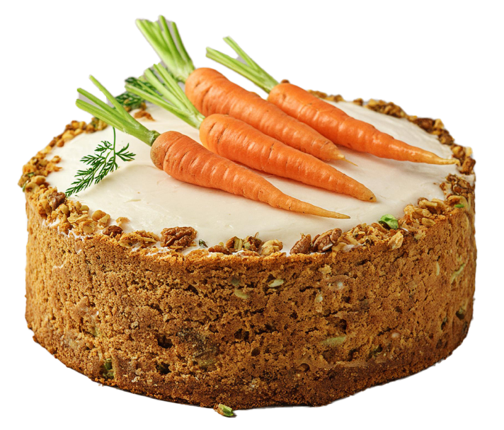

Whole Wheat Carrot Cake with Cream Cheese Frosting | The Cookbook

Whole Wheat Carrot Cake with Cream Cheese Frosting
Yields:
12 servings
Prep Time:
20 minutes
Cook Time:
35-40 minutes
Ingredients:
Cake:
- 1 1/2 cups whole wheat flour
- 1 teaspoon baking soda
- 1 teaspoon ground cinnamon
- 1/2 teaspoon salt
- 1/2 cup unsweetened applesauce
- 1/2 cup vegetable oil
- 1 cup packed brown sugar
- 2 large eggs
- 2 cups grated carrots
- 1/2 cup chopped walnuts or pecans (optional)
Frosting:
- 4 ounces cream cheese, softened
- 1/4 cup unsalted butter, softened
- 1 cup powdered sugar
- 1 teaspoon vanilla extract
Instructions:
- Preheat oven: Preheat your oven to 350°F (175°C) and grease a 9x13 inch baking pan.
- Whisk dry ingredients: In a medium bowl, whisk together the flour, baking soda, cinnamon, and salt.
- Combine wet ingredients: In a large bowl, combine the applesauce, oil, brown sugar, and eggs. Beat until well mixed.
- Add carrots and nuts: Stir in the grated carrots and chopped nuts (if using).
- Combine batter: Gradually add the dry ingredients to the wet ingredients, mixing until just combined. Don't overmix.
- Bake: Pour the batter into the prepared baking pan and bake for 35-40 minutes, or until a toothpick inserted into the center comes out clean.
- Cool: Let the cake cool completely in the pan before frosting.
- Make frosting: Beat together the cream cheese, butter, powdered sugar, and vanilla extract until smooth and fluffy.
- Frost and Enjoy: Spread the frosting over the cooled cake and enjoy!